Não cai: a seção sobre excretas nitrogenados em outros animais (amoniotélicos, ureotélicos, uricotélicos) — a orientação exclui esse ponto explicitamente. O foco do Sistema Excretor é a fisiologia humana.
Cap. 1 Transportes de Membrana
Transporte Ativo — contra o gradiente de concentração, com gasto de ATP

ATIVO → Bomba Na⁺/K⁺ Endocitose Exocitose
Difusão Simples
- Diretamente pelos fosfolipídios
- Moléculas apolares e/ou pequenas
- Sem proteínas transportadoras
- Ex: O₂, CO₂, N₂ (gases), ácidos graxos, vitaminas A, D, E, K
Difusão Facilitada
- Via proteínas transportadoras
- Moléculas polares e/ou grandes
- Canal (poro) — íons (ex: Ca²⁺, K⁺)
- Carreadora — muda conformação (ex: glicose via GLUT, aminoácidos)
- Ainda passivo — sem ATP

Água é polar, passa lentamente pela bicamada. Em grandes volumes, usa aquaporinas (proteínas canal de água — ainda passivo).
Tipos de Solução
- Isotônica — mesma concentração do interior → sem troca líquida
- Hipotônica — menos solutos que o interior → célula ganha água
- Hipertônica — mais solutos que o interior → célula perde água

Consequências em Célula Animal vs Vegetal
Célula Animal (sem parede celular)
- Hipertônica → perde água → crenação (enrugada)
- Isotônica → normal
- Hipotônica → ganha água → lise (estoura)
Célula Vegetal (com parede de celulose)
- Hipertônica → perde água → plasmólise (membrana descola da parede)
- Isotônica → flácida
- Hipotônica → ganha água → turgescente (parede impede a lise)


Bomba Na⁺/K⁺-ATPase
- Usa ATP para bombear 3 Na⁺ para FORA e 2 K⁺ para DENTRO
- Ambos contra seus gradientes (ativo)
- Mantém potencial de membrana (interior mais negativo)
- Fundamental para neurônios e músculo cardíaco
Transporte por Vesículas (também ativo)
- Endocitose — internalização:
- Fagocitose — sólidos grandes, com pseudópodes (macrófagos, neutrófilos)
- Pinocitose — líquidos, por invaginação
- Exocitose — liberação:
- Secreção — substâncias úteis (hormônios, enzimas, anticorpos)
- Clasmocitose — resíduos indigeríveis
Lúmen → enterócito → capilar sanguíneo
• Ácidos graxos e vitaminas lipossolúveis → difusão simples (apolares)
• Glicose, aminoácidos, íons → difusão facilitada (proteínas transportadoras)
| Tipo | Mecanismo | ATP? | Direção | Exemplos |
|---|---|---|---|---|
| Difusão Simples | Pelos fosfolipídios | NÃO | Favor do gradiente | O₂, CO₂, ác. graxos, vit. A, D, E, K |
| Difusão Facilitada | Proteína canal ou carreadora | NÃO | Favor do gradiente | Glicose (GLUT), aminoácidos, Ca²⁺, K⁺ |
| Osmose | Fosfolipídios / aquaporinas | NÃO | Hipotônico → Hipertônico | H₂O |
| Bomba Na⁺/K⁺ | Proteína ATPase | SIM | Contra o gradiente | Na⁺ (saída) / K⁺ (entrada) |
| Fagocitose | Pseudópodes + vesícula | SIM | Entrada (sólidos) | Bactérias, restos celulares |
| Pinocitose | Invaginação + vesícula | SIM | Entrada (líquidos) | Fluido extracelular |
| Exocitose (secreção) | Fusão de vesícula com membrana | SIM | Saída | Insulina, enzimas, anticorpos |

Cap. 2 Sistema Circulatório — Organização e Anatomia
Componentes principais
- Coração — bomba que impulsiona o sangue
- Artérias — conduzem sangue DO coração para os tecidos
- Veias — conduzem sangue DOS tecidos para o coração
- Capilares — vasos microscópicos onde ocorrem as trocas entre sangue e tecidos
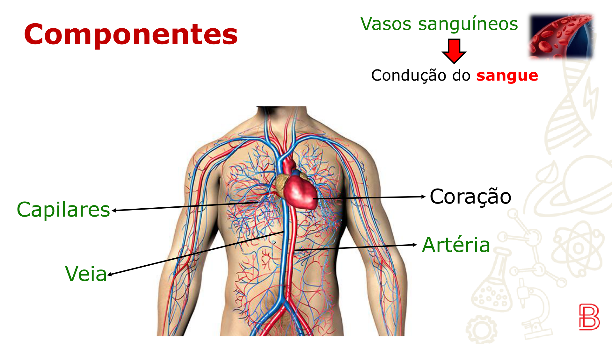
Átrio Direito
- Recebe sangue venoso (O₂ baixo) das veias cavas superior e inferior
- Envia para o ventrículo direito pela válvula tricúspide
Átrio Esquerdo
- Recebe sangue arterial (O₂ alto) das veias pulmonares
- Envia para o ventrículo esquerdo pela válvula mitral/bicúspide
Ventrículo Direito
- Bombeia sangue para os pulmões pela artéria pulmonar
- Parede mais fina (pressão menor — pequena circulação)
Ventrículo Esquerdo
- Bombeia sangue para todo o corpo pela aorta
- Parede mais espessa (pressão maior — grande circulação)
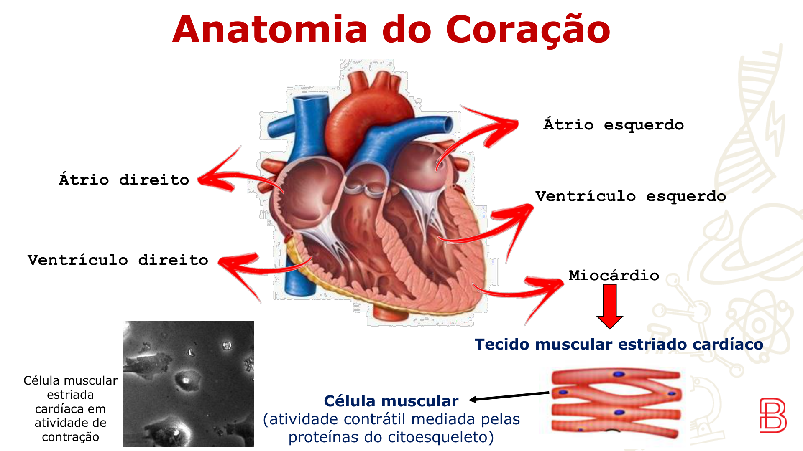
Válvulas Atrioventriculares (AV)
- Tricúspide — entre átrio direito e ventrículo direito (3 cúspides)
- Mitral (bicúspide) — entre átrio esquerdo e ventrículo esquerdo (2 cúspides)
- Abrem durante a diástole ventricular (enchimento); fecham durante a sístole (evitam refluxo para os átrios)
Válvulas Semilunares
- Pulmonar — entre ventrículo direito e artéria pulmonar
- Aórtica — entre ventrículo esquerdo e aorta
- Abrem durante a sístole ventricular; fecham durante a diástole (impedem refluxo das artérias)
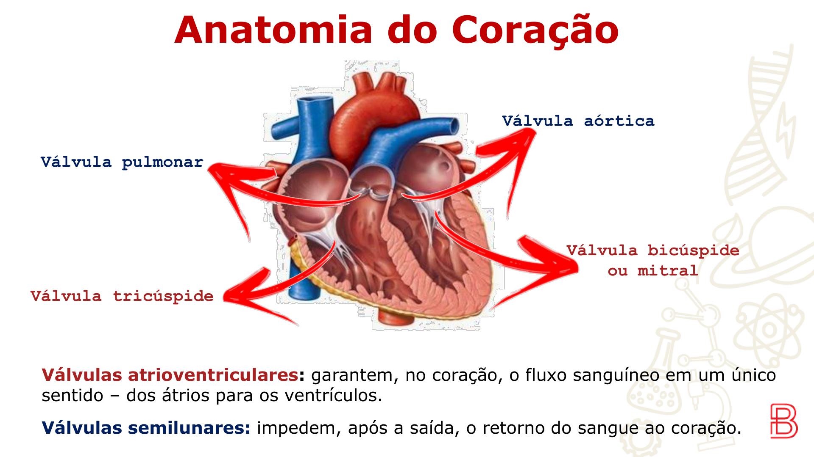
Artérias
- Conduzem sangue do coração para os tecidos
- Paredes espessas e elásticas — suportam alta pressão
- Camada muscular lisa desenvolvida (se contraem para regular fluxo)
- Regra geral: conduzem sangue oxigenado (exceto artéria pulmonar)
Veias
- Conduzem sangue para o coração a partir dos tecidos
- Paredes mais finas, menor pressão
- Possuem válvulas venosas que impedem o refluxo do sangue
- Regra geral: conduzem sangue desoxigenado (exceto veias pulmonares)
Capilares
- Vasos microscópicos — parede com apenas 1 camada de células (endotélio)
- Local de troca de substâncias entre sangue e tecidos (O₂, CO₂, nutrientes, resíduos)
- Maior área total de secção transversal → menor velocidade do sangue → mais tempo para trocas
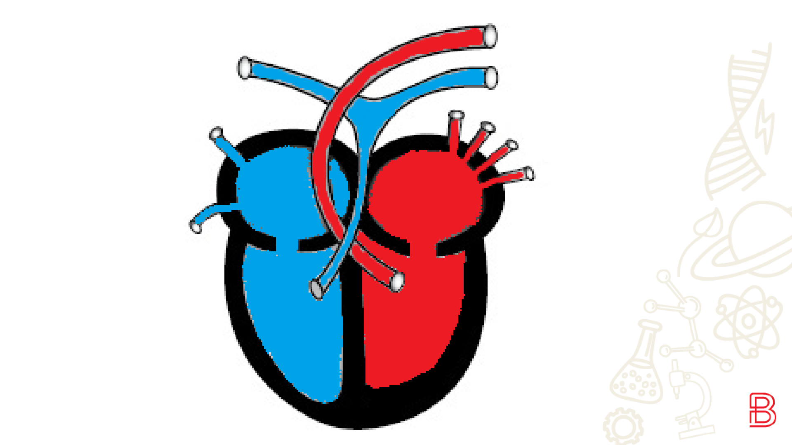
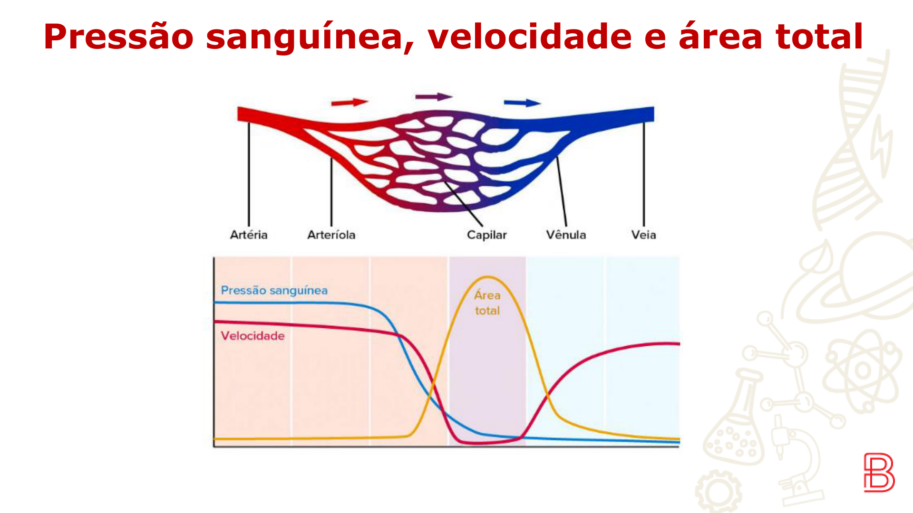
Cap. 3 Sistema Circulatório — Fisiologia
- Fechada — o sangue circula sempre dentro de vasos (nunca banha diretamente os tecidos, ao contrário da circulação aberta de insetos)
- Dupla — existem dois circuitos: pequena circulação (pulmonar) e grande circulação (sistêmica)
- Completa — sangue oxigenado e desoxigenado não se misturam no coração (septos cardíacos completos); diferente de anfíbios e répteis (incompleta)
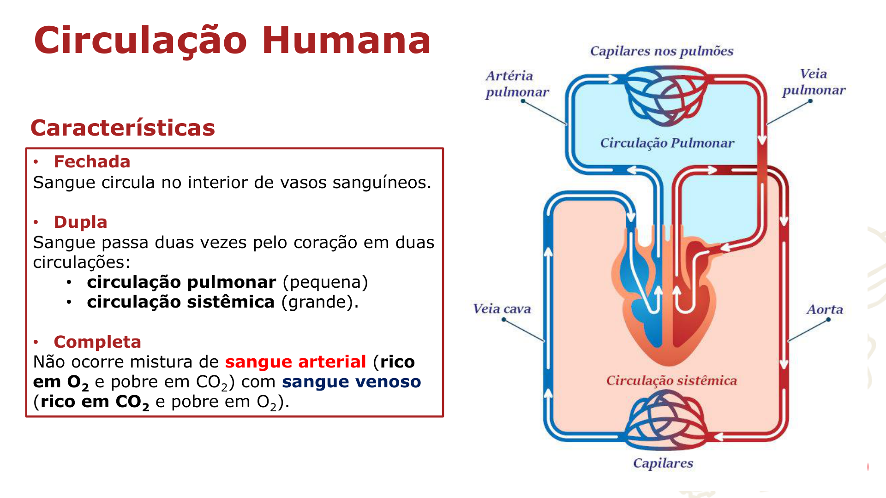
Pequena Circulação (Pulmonar)
- Ventrículo direito → Artéria pulmonar → Pulmões → Veias pulmonares → Átrio esquerdo
- Objetivo: hematose (troca de CO₂ por O₂ nos pulmões)
- Sangue venoso (azul) → Sangue arterial (vermelho)
Grande Circulação (Sistêmica)
- Ventrículo esquerdo → Aorta → Tecidos → Veias cavas → Átrio direito
- Objetivo: distribuir O₂ e nutrientes para todos os tecidos e recolher CO₂ e resíduos
- Sangue arterial (vermelho) → Sangue venoso (azul)
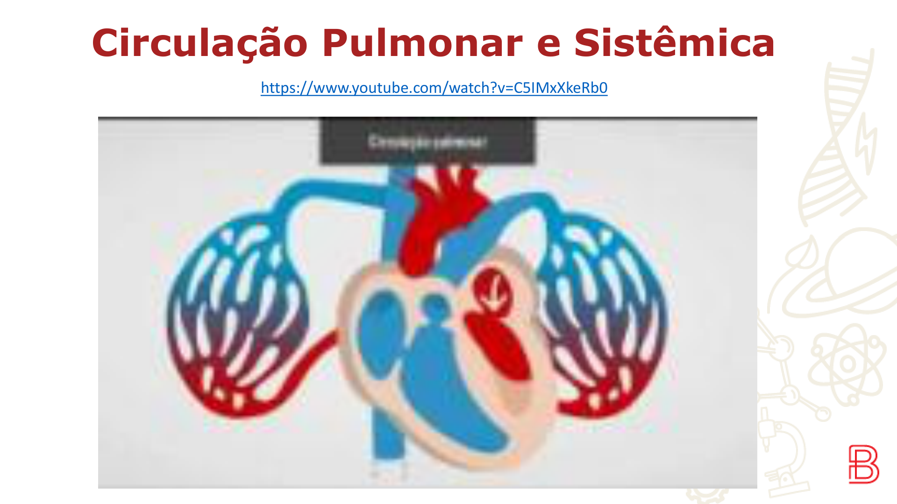
Diástole = relaxamento do músculo cardíaco → câmara se enche de sangue
Fases do Ciclo Cardíaco
- Diástole atrial — átrios relaxam e se enchem de sangue vindo das veias
- Sístole atrial — átrios contraem e empurram sangue para os ventrículos (válvulas AV abertas)
- Diástole ventricular — ventrículos relaxam e se enchem
- Sístole ventricular — ventrículos contraem com força, fechando válvulas AV e abrindo semilunares → sangue sai para artérias
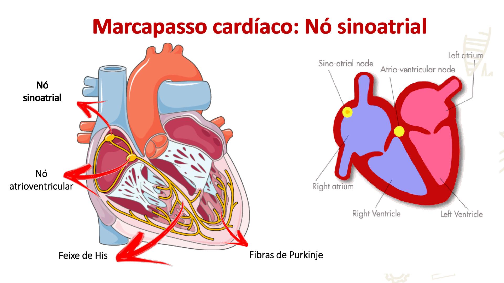
Caminho do Impulso Elétrico
- Nó sinoatrial (NSA) — localizado no átrio direito; gera ~60–100 impulsos/min (FC normal); ativa os átrios
- Nó atrioventricular (NAV) — entre átrios e ventrículos; retarda levemente o impulso para os átrios contraírem antes dos ventrículos
- Feixe de His — conduz o impulso pelo septo interventricular
- Fibras de Purkinje — distribuem o impulso pelas paredes ventriculares, coordenando a contração de baixo para cima
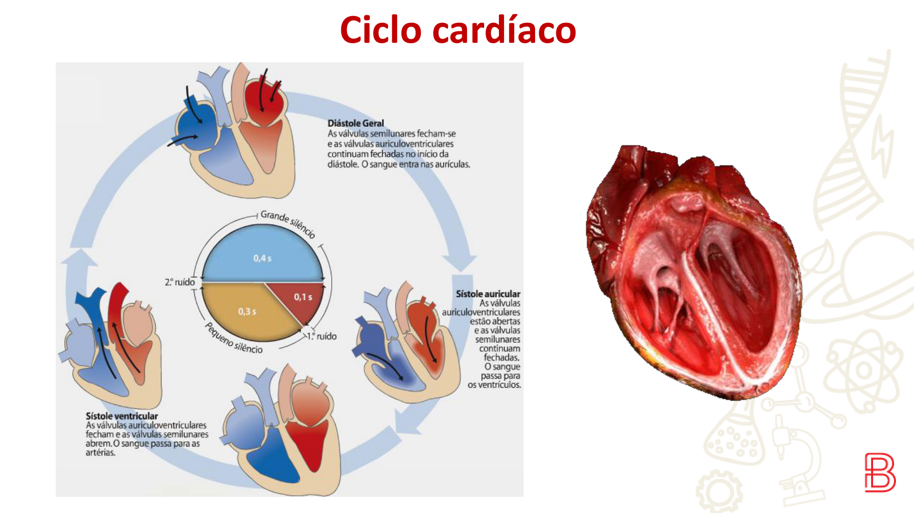
Expressa em mmHg no formato sistólica/diastólica.
PA normal: 12 × 8 (120/80 mmHg)
Hipertensão (Pressão Alta)
- PA ≥ 14 × 9 (140/90 mmHg)
- Silenciosa — frequentemente sem sintomas
- Riscos: AVC, infarto, insuficiência renal
Hipotensão (Pressão Baixa)
- PA < 9 × 6 (90/60 mmHg)
- Sintomas: tontura, desmaio, fraqueza
- Pode indicar desidratação ou problemas cardíacos
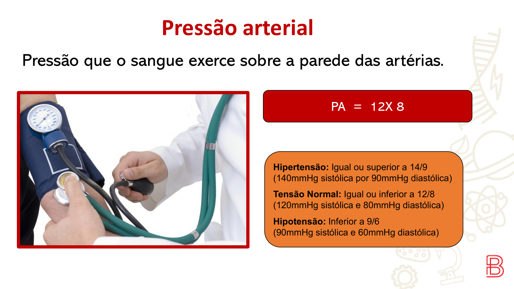
Frequência Cardíaca (FC)
- Número de batimentos cardíacos por minuto (bpm)
- Normal em repouso: 60–100 bpm (adultos)
- Bradicardia — FC < 60 bpm (atletas frequentemente têm FC baixa — coração mais eficiente)
- Taquicardia — FC > 100 bpm (esforço, estresse, patologias)
- Regulada pelo sistema nervoso autônomo (simpático ↑ FC; parassimpático ↓ FC) e hormônios (adrenalina ↑ FC)
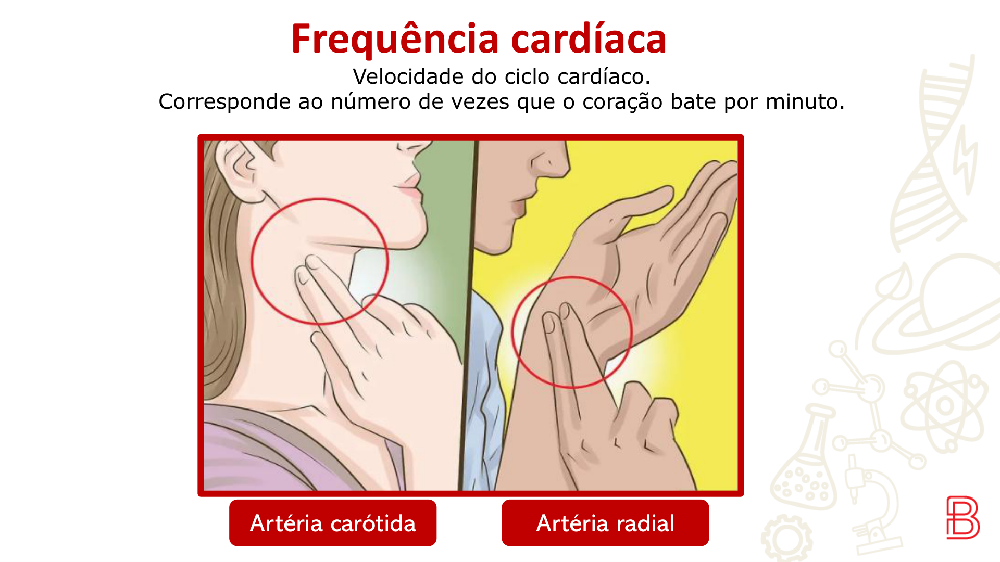
Cap. 4 Sangue e Linfa
Plasma (~55% do volume)
- ~90% água + proteínas plasmáticas (albumina, globulinas, fibrinogênio)
- Sais e íons (Na⁺, K⁺, Cl⁻, HCO₃⁻, Ca²⁺), nutrientes, hormônios, gases dissolvidos e excretas
Elementos figurados (~45% — o hematócrito)
- Hemácias (eritrócitos) — transporte de gases
- Leucócitos — defesa
- Plaquetas (trombócitos) — fragmentos de megacariócitos, não são células inteiras — coagulação
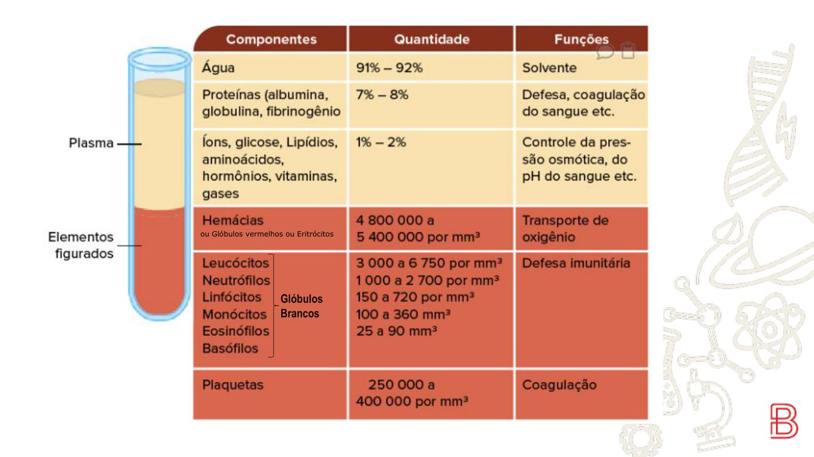
Albumina (~60% — produzida no fígado)
- Mantém a pressão oncótica, "segurando" água dentro dos vasos por osmose
- Transporta hormônios, ácidos graxos, bilirrubina, cálcio e medicamentos
- Sua falta causa edema (a água escapa dos capilares)
Globulinas
- Alfa/beta — transportam lipídios, vitaminas, hormônios e íons metálicos
- Gamaglobulinas = anticorpos (imunoglobulinas), produzidos pelos plasmócitos
Hemácias (eritrócitos)
- Componente principal: hemoglobina (4 cadeias, cada uma com um grupo heme + Fe²⁺)
- São anucleadas nos mamíferos — perdem núcleo, mitocôndrias e ribossomos na medula, abrindo espaço para mais hemoglobina
- Anemia = redução de hemácias/hemoglobina. Causas: ferro, B12/ácido fólico, hemorragias, hemólise, doenças genéticas (falciforme, talassemia), verminose, insuficiência renal (menos eritropoietina)
Leucócitos (glóbulos brancos)
- Função: defesa. Chegam ao local da infecção por diapedese (atravessam o capilar) guiados por quimiotaxia (sinais químicos)
- Neutrófilos (50-70%, mais numerosos) — 1ºs a chegar, fagocitam bactérias, morrem no processo (formam o pus)
- Linfócitos B — produzem anticorpos; Linfócitos T — coordenam (auxiliares) ou destroem células infectadas (citotóxicos)
- Monócitos — maiores leucócitos, viram macrófagos nos tecidos
- Eosinófilos (alergias/parasitoses) e basófilos (histamina/heparina)
- Leucocitose (aumento): infecções, inflamação, estresse, ou de forma grave — leucemia. Leucopenia (queda): infecções virais, quimioterapia, doenças autoimunes → imunodepressão
Plaquetas
- Função: hemostasia — formam o tampão plaquetário e liberam tromboplastina
- Trombocitopenia (queda): petéquias, hematomas, sangramentos (dengue grave)
- Trombocitose (aumento): risco de trombos → AVC, embolia, infarto
Onde são produzidos
Todos derivam de uma célula-tronco na medula óssea vermelha (hematopoiese). Os linfócitos T saem imaturos e amadurecem no timo; os linfócitos B amadurecem na própria medula.
As plaquetas e o tecido lesionado liberam tromboplastina, que — com íons Ca²⁺ — converte a protrombina (proteína inativa, produzida no fígado com ajuda da vitamina K) em trombina. A trombina age sobre o fibrinogênio, transformando-o em fibrina, que forma a rede do coágulo.
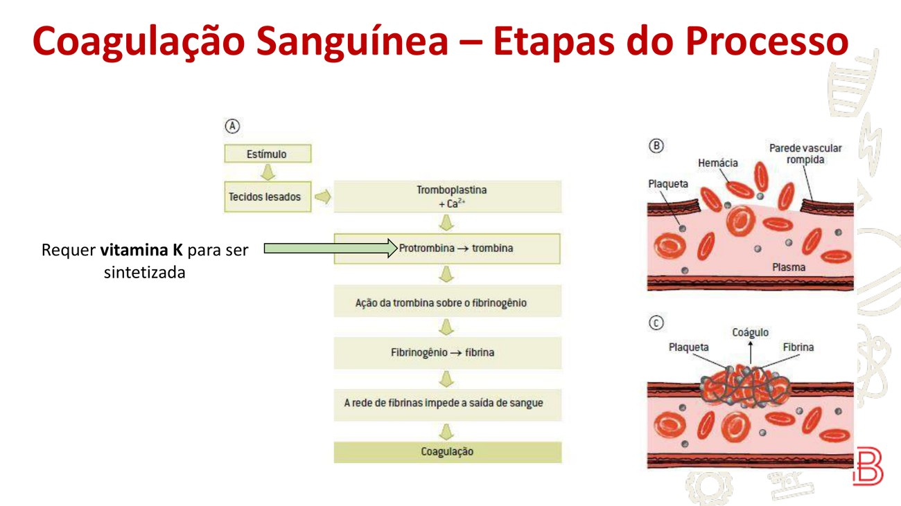
Vitamina K
- Cofator para o fígado sintetizar protrombina e outros fatores
- Fontes: folhas verde-escuras, fígado, ovos — e parte é produzida pela microbiota intestinal
Cálcio (fator IV)
- Cofator em várias etapas, inclusive protrombina→trombina
- Tubos de coleta com EDTA/citrato impedem a coagulação sequestrando o cálcio
Composição parecida com o plasma, mas com menos proteínas, sem hemácias nem plaquetas — rica em linfócitos. No intestino, os vasos quilíferos absorvem gorduras e a linfa fica leitosa (quilo).
Relação com o sangue
- Origem: vem do plasma que extravasou dos capilares
- Destino: retorna ao sangue pelo ducto torácico e ducto linfático direito, que desembocam nas veias subclávias
- Diferenças: circulação de mão única (nunca ao contrário), sem bomba própria (depende dos músculos esqueléticos e de válvulas) e não transporta hemácias
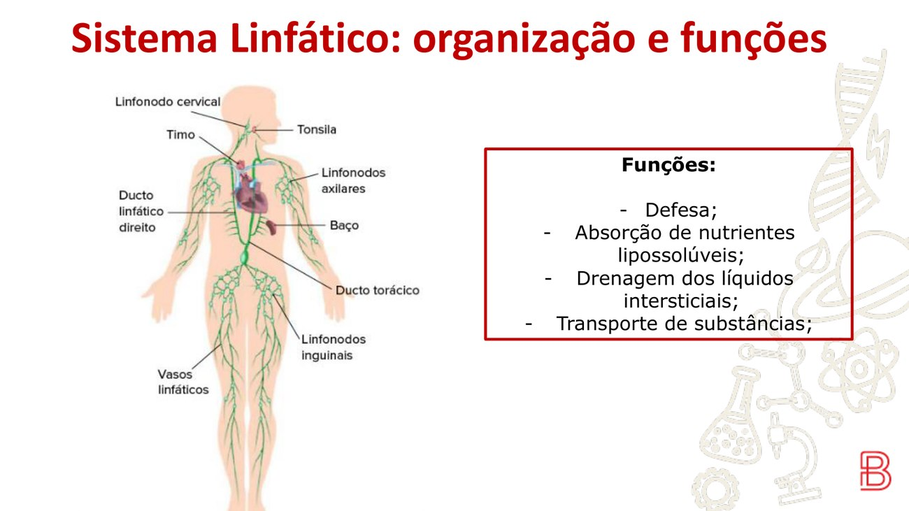
Órgãos linfoides
- Vasos linfáticos — devolvem o líquido ao sangue; nos vasos quilíferos, absorvem lipídios e vitaminas A/D/E/K
- Linfonodos — filtram a linfa, concentram linfócitos/macrófagos; incham na "íngua" (linfadenopatia)
- Baço — polpa branca (filtra o sangue, monta resposta imune) e polpa vermelha (destrói hemácias velhas, ~120 dias, recicla o ferro)
- Timo — maturação e seleção dos linfócitos T; ativo na infância, involui na puberdade
Cap. 5 Sistema Imunológico
Funções essenciais
- Distinguir o próprio (self) do estranho (não self)
- Combater agentes infecciosos (bactérias, vírus, fungos, protozoários, vermes)
- Vigilância imunológica — destruir células tumorais
- Limpeza e reparo — remover células mortas/restos celulares
- Memória imunológica — respostas mais rápidas em novos contatos (base das vacinas)
Quando falha por falta
- Imunodeficiências (AIDS) — infecções oportunistas se tornam letais
Quando falha por excesso
- Alergias (resposta a pólen/ácaros) e doenças autoimunes (lúpus, diabetes tipo 1, artrite reumatoide)
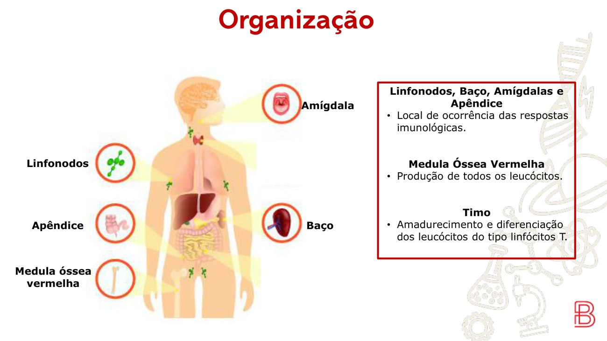
Órgãos e antígenos
- Linfonodos, baço, amígdalas e apêndice — local das respostas imunológicas
- Medula óssea vermelha — produção de todos os leucócitos
- Timo — amadurecimento dos linfócitos T
- Antígenos — componentes moleculares (em geral proteínas/polissacarídeos) de corpos estranhos, que deflagram a produção de anticorpos
| Imunidade INATA | Imunidade ADAPTATIVA | |
|---|---|---|
| Também chamada | natural, inespecífica | adquirida, específica |
| Quando surge | já nascemos com ela | desenvolve-se após contato com o antígeno |
| Especificidade | age igual contra qualquer invasor | sob medida para cada antígeno |
| Velocidade | imediata (minutos a horas) | lenta no 1º contato (dias) |
| Memória | NÃO gera | GERA memória |
Componentes da Inata
- Barreiras físicas/químicas (pele, muco, cílios, lisozima, suco gástrico, microbiota)
- Fagócitos (neutrófilos, macrófagos, dendríticas)
- Células NK (matam infectadas/tumorais)
- Inflamação, febre, sistema complemento
Componentes da Adaptativa
- Linfócitos B → plasmócitos → anticorpos (imunidade humoral)
- Linfócitos T: citotóxicos (CD8, destroem infectadas) e auxiliares (CD4, coordenam)
- Ambos deixam células de memória
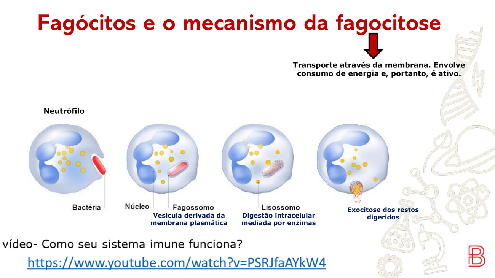
Fagocitose
- Neutrófilo engloba o micro-organismo em um fagossomo, que se funde a lisossomos (fagolisossomo) — resposta rápida, morre no processo, forma o pus
- Macrófago (do monócito) fagocita mais e vive mais, e ainda atua como célula apresentadora de antígeno — a ponte entre a imunidade inata e a adaptativa
| Tipo | Definição | Exemplo |
|---|---|---|
| Ativa Natural | O organismo contrai a doença e produz seus próprios anticorpos e memória. Lenta, duradoura. | Ter tido catapora |
| Ativa Artificial | Produz os próprios anticorpos, mas o antígeno foi introduzido artificialmente. Lenta, duradoura, com memória. | VACINAS |
| Passiva Natural | Recebe anticorpos prontos por via natural. Sem memória, curta duração. | Placenta (IgG), leite/colostro (IgA) |
| Passiva Artificial | Recebe anticorpos prontos inoculados artificialmente. Imediata, sem memória. | SOROS |
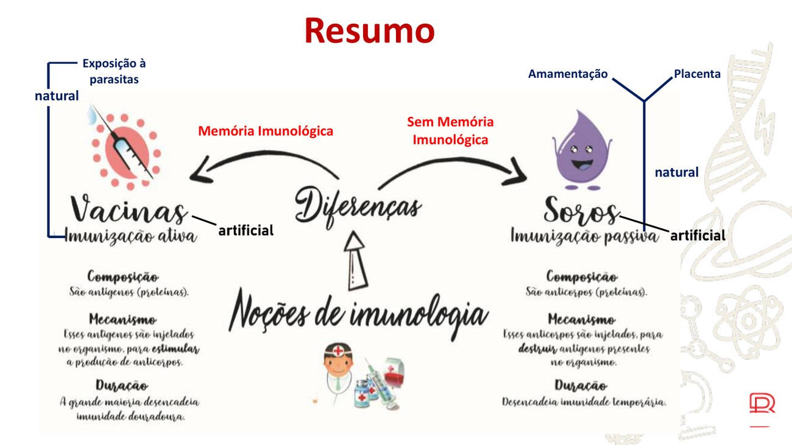
VACINA (ativa artificial)
- Antígeno morto/atenuado/mRNA estimula a produção dos próprios anticorpos
- Ação lenta (dias/semanas) — por isso é preventiva
- Duração longa, gera memória — daí as doses de reforço
SORO (passiva artificial)
- Anticorpos prontos (produzidos em animal, ex. cavalo) transferidos ao paciente
- Ação imediata — por isso é curativo/tratamento
- Duração curta, sem memória — precisa de novo soro se picado de novo
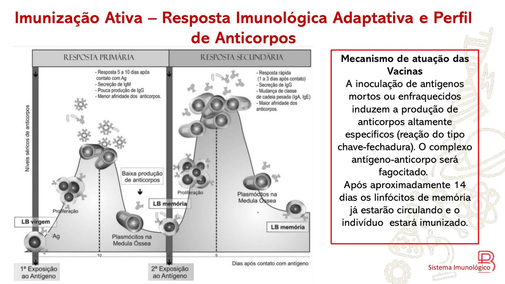
1º contato (resposta primária)
- Poucos linfócitos reconhecem aquele antígeno — precisam se multiplicar (expansão clonal)
- Latência de vários dias, produção baixa, predomínio de IgM
- Ao final, ficam as células de memória
2º contato (resposta secundária)
- Células de memória já existem em grande número
- Resposta rápida (horas a poucos dias), muito mais intensa, predomínio de IgG
- Patógeno costuma ser eliminado antes de causar sintomas
Cap. 6 Sistema Respiratório
Respiração Sistêmica
- Processo mecânico/físico: entrada e saída de ar, hematose, transporte pelo sangue
- Não produz energia
Respiração Celular
- Processo bioquímico, ocorre nas mitocôndrias
- Oxida glicose com O₂, libera CO₂, água e ATP
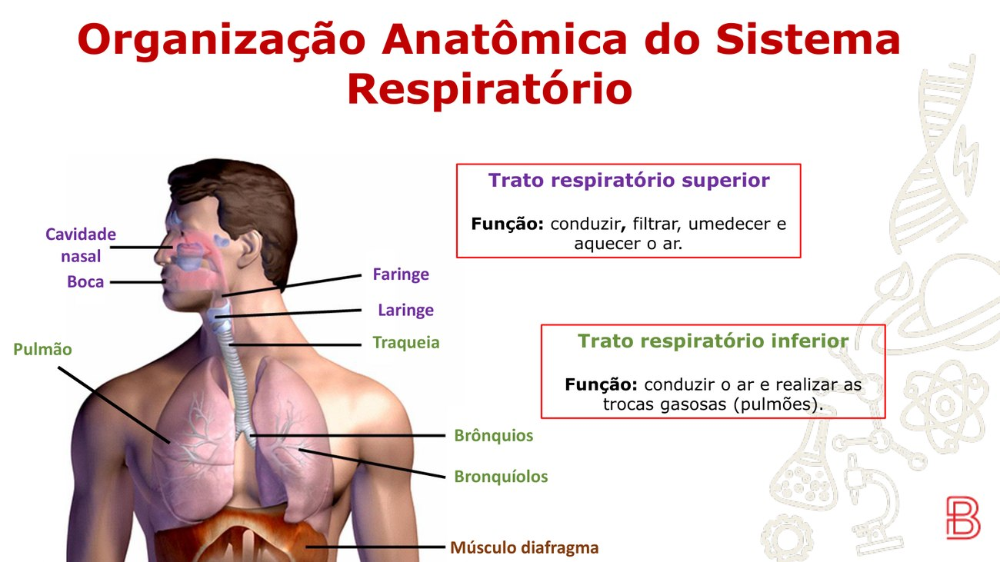
Trato Superior
- Conduz, filtra, umedece e aquece o ar
Trato Inferior
- Conduz o ar e realiza as trocas gasosas (pulmões)
- A faringe é comum ao sistema respiratório e digestório; a epiglote fecha a laringe na deglutição, evitando engasgo
- A traqueia tem anéis cartilaginosos em C e epitélio ciliado com muco — o aparelho mucociliar, destruído pelo cigarro
- Do nariz aos bronquíolos terminais o ar só circula, sem trocar nada: é o espaço morto anatômico. A troca começa nos bronquíolos respiratórios
Músculos e movimentos respiratórios
| Movimento | Volume torácico | Pressão interna | Diafragma |
|---|---|---|---|
| Inspiração | Aumenta | Diminui (menor que a atmosférica → ar entra) | Contraído, se aplana |
| Expiração | Diminui | Aumenta (maior que a atmosférica → ar sai) | Relaxado, volta à cúpula |
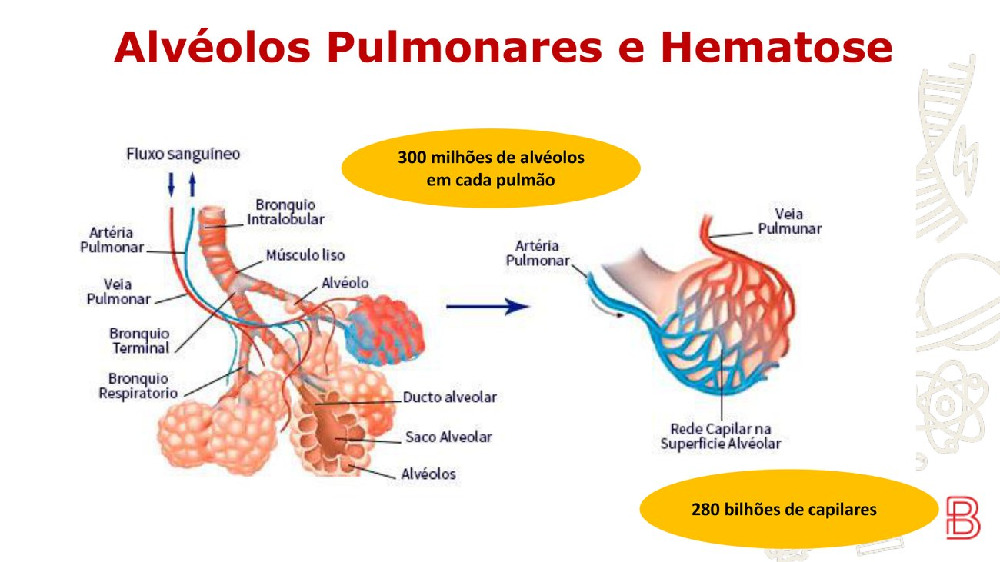
Hemoglobina e o transporte de O₂
- 4 cadeias, cada uma com um grupo heme + Fe²⁺. Liga até 4 O₂, formando oxi-hemoglobina
- ~98,5% do O₂ do sangue viaja ligado a ela (multiplica ~70× a capacidade de transporte do plasma sozinho)
- Ligação cooperativa → curva sigmoide. Liberação nos tecidos é favorecida por baixa pO₂, pH baixo (efeito Bohr), temperatura alta
Transporte de CO₂ (o inverso: hemoglobina é coadjuvante)
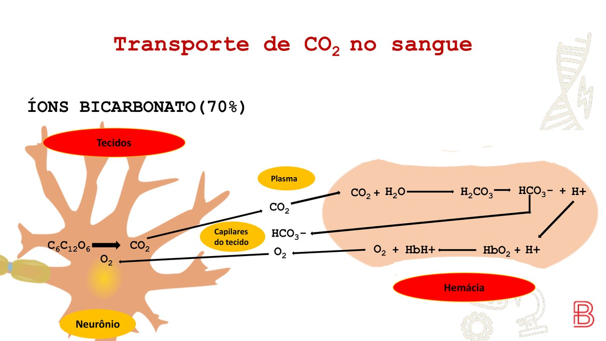
- ~70% como bicarbonato (HCO₃⁻) — CO₂ + H₂O → H₂CO₃ → H⁺ + HCO₃⁻, reação acelerada pela anidrase carbônica dentro da hemácia
- ~23% como carbaminoemoglobina — liga-se à parte proteica (globina), não ao ferro, por isso não compete com o O₂
- ~7% dissolvido no plasma
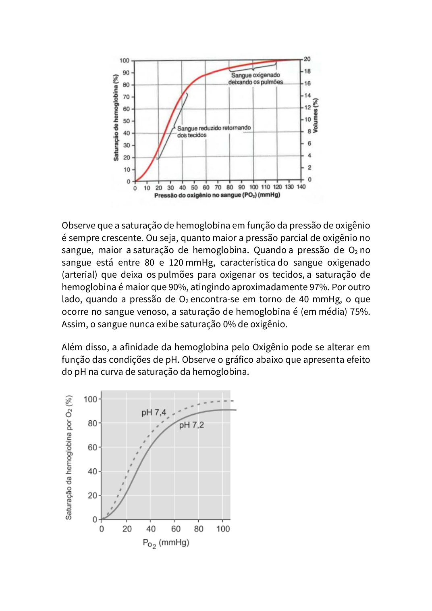
- A saturação de Hb em função da pO₂ é sempre crescente — nunca chega a 0%
- pO₂ entre 80-120 mmHg (sangue arterial, saindo dos pulmões): saturação >90%, ~97%
- pO₂ ~40 mmHg (sangue venoso normal): saturação ~75%
Cap. 7 Sistema Excretor
| Estrutura | O que elimina |
|---|---|
| Rins (Sistema excretor) | Urina — água, sais, ureia, H⁺ |
| Pulmões | Água e CO₂ |
| Glândulas sudoríparas (pele) | Água, sais e ureia (suor) |
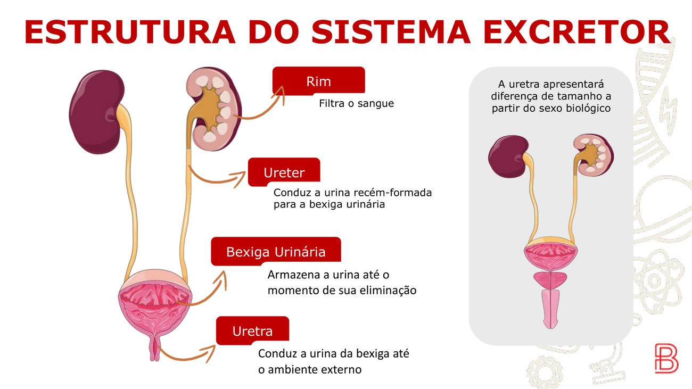
- Rins — filtram o sangue, formam a urina
- Ureteres — conduzem a urina até a bexiga por movimentos peristálticos (não por gravidade)
- Bexiga urinária — armazena a urina (~400-600 mL)
- Uretra — conduz a urina ao exterior, com esfíncter interno (involuntário) e externo (voluntário); no homem também é via reprodutiva
Córtex renal (externo)
- Corpúsculos renais (glomérulo + cápsula de Bowman) e túbulos contorcidos — onde ocorre a filtração
Medula renal (interno)
- Pirâmides renais, alças de Henle e ductos coletores — gradiente que concentra a urina
A pelve renal, em forma de funil, recebe a urina das papilas e a conduz ao ureter.
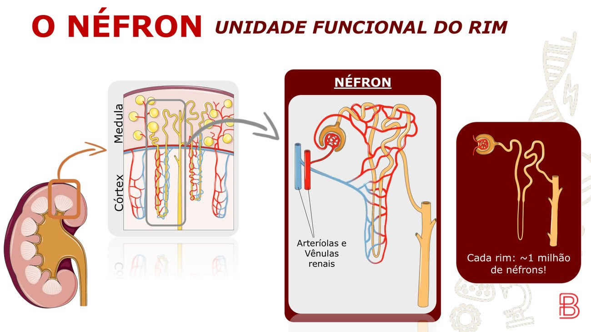
As partes do néfron (~1 milhão por rim)
- Glomérulo — novelo de capilares (arteríola aferente entra, eferente — mais estreita — sai, mantendo alta pressão)
- Cápsula de Bowman — recebe o filtrado; glomérulo + cápsula = corpúsculo renal
- Túbulo contorcido proximal — reabsorção em massa (100% glicose e aminoácidos)
- Alça de Henle — gradiente osmótico da medula (mecanismo de contracorrente)
- Túbulo contorcido distal — ajuste fino, sob ação de aldosterona e ADH
- Ducto coletor — compartilhado por vários néfrons, reabsorção final de água (ADH)
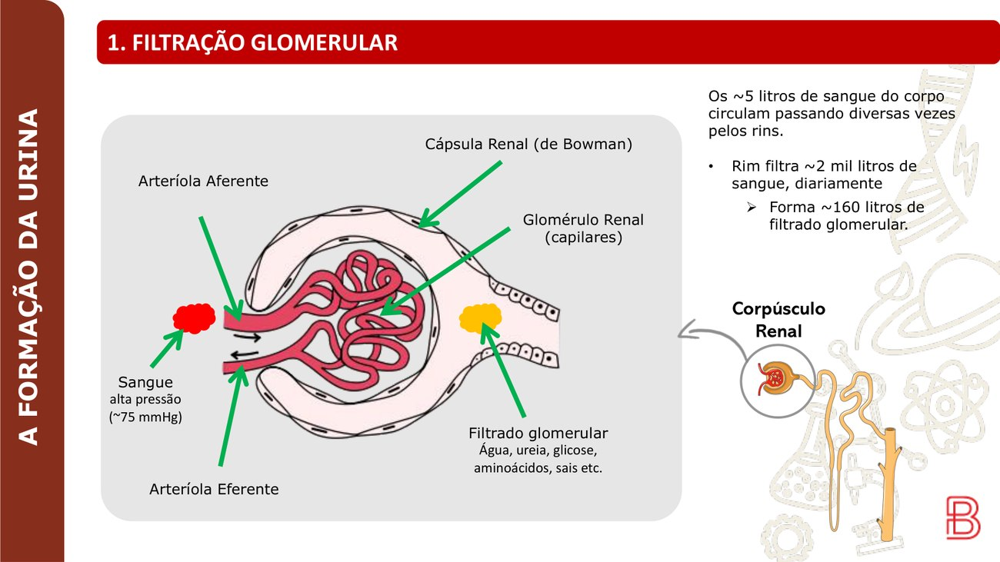
| Local | Processo | Substâncias | Transporte envolvido |
|---|---|---|---|
| Corpúsculo renal (glomérulo + cápsula) | Filtração, sob alta pressão (~75 mmHg) | Água, glicose, aminoácidos, sais, ureia etc. | Pressão hidrostática (não é osmose/difusão/ativo — é filtração, um 4º mecanismo) |
| Túbulo contorcido proximal | Reabsorção em massa (100% glicose/aminoácidos) | Água, glicose, aminoácidos, sais | Transporte ativo (glicose/aminoácidos/Na⁺, contra o gradiente) + osmose (água acompanha os solutos) |
| Alça de Henle | Reabsorção por osmose (gradiente de contracorrente) | Água e sais | Ramo descendente: osmose (água sai). Ramo ascendente: transporte ativo de NaCl (impermeável à água) |
| Túbulo contorcido distal | Secreção ativa de excretas | Ácido úrico, amônia, H⁺ | Transporte ativo (contra o gradiente, gasta ATP) |
| Ducto coletor | Reabsorção final de água (ADH), conduz a urina ao ureter | Água, ureia, sais | Osmose, via aquaporinas — sua permeabilidade é regulada pelo ADH |
Sangue × Filtrado Glomerular × Urina
O corpúsculo renal filtra o plasma quase sem selecionar por tipo de molécula pequena — por isso o filtrado glomerular começa parecido com o plasma (sem células nem proteínas grandes). É só depois, na reabsorção e na secreção ao longo do néfron, que a composição muda bastante até virar urina:
| Substância | Sangue (plasma) | Filtrado glomerular | Urina |
|---|---|---|---|
| Proteínas e células | Presentes (hemácias, leucócitos, proteínas plasmáticas) | Ausentes — grandes demais para passar pelo filtro | Ausentes (se aparecerem, é sinal de lesão renal) |
| Glicose | Presente | Igual ao plasma | Praticamente zero — 100% reabsorvida no túbulo proximal |
| Aminoácidos | Presentes | Iguais ao plasma | Praticamente zero — reabsorvidos no túbulo proximal |
| Ureia | Presente (baixa concentração) | Igual ao plasma | Concentrada — é a principal excreta eliminada |
| Sais (Na⁺, K⁺...) | Concentração regulada | Igual ao plasma | Variável — o que excede a necessidade do corpo é eliminado |
| Água | Volume normal | Grande volume (~180 L/dia) | Volume bem menor (~1,5 L/dia) — a maior parte foi reabsorvida |
O rim é o principal órgão da homeostase:
- Excreção de resíduos nitrogenados (ureia, ácido úrico, creatinina)
- Osmorregulação — volume de água, via ADH (antidiurético)
- Equilíbrio hidroeletrolítico (Na⁺, K⁺, Cl⁻, Ca²⁺...)
- Equilíbrio ácido-base — excreta H⁺, reabsorve bicarbonato
- Regulação da pressão arterial — pela renina (sistema renina-angiotensina-aldosterona)
- Função endócrina — eritropoietina (estimula produção de hemácias) e ativação da vitamina D
Componentes normais da urina
- Água (~95%), ureia, sais/íons, creatinina, ácido úrico, urocromo/urobilina (cor amarela)
O que NÃO deve aparecer
- Glicose (glicosúria) → sinal de diabetes
- Proteínas (proteinúria) → lesão glomerular
- Hemácias (hematúria) → lesão, cálculo ou infecção
Quiz — AI Unificada e Prova Trimestral
34 questões · Transportes · Circulatório · Sangue e Linfa · Imunológico · Respiratório · Excretor
1. Vitaminas A, D, E e K são absorvidas por difusão simples, enquanto a glicose precisa de difusão facilitada. O que determina qual via cada molécula usa?
2. Uma hemácia e uma célula vegetal são colocadas em água destilada (solução hipotônica). Qual é o destino de cada uma e por quê diferem?
3. A bomba Na⁺/K⁺ bombeia 3 Na⁺ para fora e 2 K⁺ para dentro usando ATP. Por que esse processo é transporte ativo e não difusão facilitada?
4. Um pesquisador bloqueia todas as proteínas carreadoras da membrana dos enterócitos. Quais nutrientes ainda seriam absorvidos e quais não seriam?
5. A circulação humana é descrita como "dupla e completa". O que significa cada um desses termos e qual é a vantagem da circulação completa em relação à de anfíbios?
6. O ventrículo esquerdo tem paredes musculares muito mais espessas que o ventrículo direito. Por que essa diferença anatômica existe?
7. Durante a sístole ventricular, as válvulas atrioventriculares (tricúspide e mitral) se fecham, enquanto as semilunares (pulmonar e aórtica) se abrem. Por que esse padrão inverso de abertura é necessário?
8. Por que os capilares sanguíneos, apesar de serem os vasos mais finos, são o local ideal para as trocas entre sangue e tecidos?
9. O nó sinoatrial (NSA) é chamado de "marcapasso natural" do coração. Qual seria a consequência se o NSA fosse danificado e o impulso partisse apenas do nó atrioventricular (NAV)?
10. A pressão arterial de uma paciente é 15 × 10. Como essa medida é interpretada clinicamente e quais são os riscos associados se mantida cronicamente?
11. Por que o sangue é classificado como um tecido conjuntivo, mesmo sendo líquido?
12. Um paciente faz um teste de paternidade com uma amostra de sangue. Por que o exame não pode usar diretamente o DNA das hemácias?
13. Uma pessoa com desnutrição grave e baixa produção de albumina desenvolve inchaço (edema) generalizado. Qual é a explicação?
14. Após um corte, o sangue coagula por uma cascata de reações. Qual a sequência correta, e qual o papel da vitamina K nesse processo?
15. Por que uma obstrução nos vasos linfáticos, como ocorre na elefantíase (filariose), causa inchaço na região afetada?
16. Qual a diferença fundamental entre a circulação sanguínea e a circulação linfática?
17. Qual a diferença central entre imunidade inata e adaptativa, quanto à memória e à velocidade de resposta?
18. Um macrófago, além de fagocitar micro-organismos, expõe fragmentos do invasor na própria membrana para os linfócitos T. Que função é essa, e por que ela é importante?
19. Por que uma vacina é considerada prevenção, e um soro é considerado tratamento?
20. Um recém-nascido recebe anticorpos da mãe através do colostro (leite materno). Que tipo de imunidade é essa, e por que ela é temporária?
21. Por que a segunda dose de uma vacina (reforço) provoca uma resposta muito mais rápida e intensa que a primeira?
22. Uma pessoa com AIDS tem seus linfócitos T auxiliares (CD4) destruídos pelo HIV. Por que isso a torna vulnerável a infecções que normalmente não afetariam uma pessoa saudável?
23. Por que uma pessoa não consegue "se matar" simplesmente prendendo a respiração?
24. Qual o tipo de transporte envolvido na hematose (troca gasosa nos alvéolos), e por que ele não consome ATP?
25. Durante um exercício físico intenso, o músculo produz mais CO₂ e fica mais ácido. Como isso afeta a liberação de oxigênio pela hemoglobina?
26. Qual é a principal forma de transporte do gás carbônico no sangue, e qual enzima acelera essa reação dentro da hemácia?
27. Um alpinista sobe rapidamente a uma grande altitude e sente falta de ar, apesar de respirar normalmente. Qual a causa fisiológica, e qual a adaptação do corpo a longo prazo?
28. Por que o monóxido de carbono (CO) é tão perigoso para o transporte de oxigênio no sangue?
29. Qual órgão realmente produz a ureia, e qual o papel dos rins nesse processo?
30. Por que a arteríola eferente do glomérulo é mais estreita que a arteríola aferente, e qual a consequência disso?
31. Um exame de urina detecta a presença de glicose (glicosúria). O que isso normalmente indica?
32. Qual a diferença entre reabsorção e secreção tubular na formação da urina?
33. Por que a alça de Henle é fundamental para a capacidade do rim de concentrar a urina e economizar água?
34. As glândulas suprarrenais aparecem nos esquemas do sistema excretor, posicionadas sobre os rins. Por que isso pode gerar confusão em uma prova?